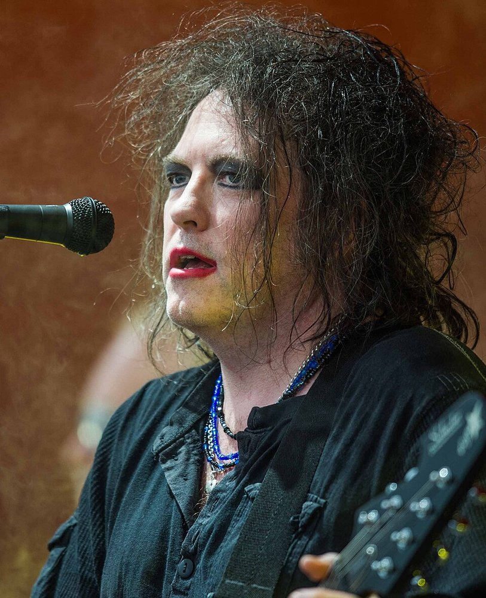
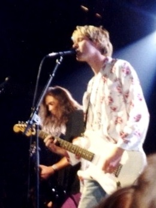

⚡ Pas le temps : le résumé 30 secondes
- 🏛️ Boss CE-1 (1976) — la pionnière, première pédale Boss de l'histoire. Le son de The Police.
- 💙 Boss CE-2 (1979) — le format compact qui a défini le chorus des années 80. Le son de The Cure.
- 🌊 EHX Small Clone (1979) — plus brute, plus ondulante. Le son de Come As You Are.
- 🎛️ TC Corona (2011) — la moderne polyvalente, avec TonePrint et mode SCF.
Le chorus est l'effet qui a maquillé tout le rock des années 80. Tu fermes les yeux sur Walking on the Moon, Come As You Are, ou n'importe quel morceau de The Cure — ce son aquatique, légèrement déphasé, qui donne l'impression que deux guitares jouent à l'unisson sans jamais être tout à fait synchronisées. C'est ça, le chorus.
Né en 1975 dans le circuit « Dimensional Space Chorus » du légendaire ampli Roland JC-120, l'effet a vite eu droit à son propre boîtier en 1976 : le Boss CE-1, qui devient au passage la toute première pédale Boss de l'histoire. Voici quatre pédales chorus qui comptent vraiment. Et si tu montes ton premier pédalier, commence par notre guide pour choisir ses pédales d'effets.
Les 4 Chorus essentielles

1976 · MN3002 BBD · La pionnière
CE-1 Chorus Ensemble
Boss
La pédale qui a inventé un genre. Le CE-1 reprend le circuit chorus du Roland JC-120 dans un boîtier autonome de la taille d'une boîte à chaussures. Stéréo, double mode chorus/vibrato, son riche et dimensionnel — toutes les pédales de modulation modernes lui doivent quelque chose. Aujourd'hui c'est un objet de collection.
🎸 Qui l'a utilisée ?
Andy Summers en a fait le pilier de son son chez The Police — Message in a Bottle, Walking on the Moon, Don't Stand So Close to Me. John Frusciante l'a aussi adoptée pour les textures modulées de Scar Tissue. La référence absolue.

1979 · Compact · Le rapport qualité/prix
CE-2 Chorus
Boss
Le CE-1 dans le format compact Boss qui s'est imposé partout. Deux potards : Rate et Depth. C'est tout, et c'est ce qu'il fallait. Le CE-2 a défini le son chorus des années 80 — clair, brillant, sans abîmer les médiums. David Gilmour et Johnny Marr en ont fait des fans déclarés.
🎸 Qui l'a utilisée ?
Robert Smith en a fait l'arme secrète du son de The Cure — Pictures of You, Lovesong, toute la trilogie cold wave passe par le CE-2. Le son shoegaze britannique des années 80-90 doit énormément à ce petit boîtier bleu.

1979 · Analogique BBD · Le son grunge
Small Clone
Electro-Harmonix
Le concurrent direct du Boss CE-2, sorti la même année. Plus brut, plus prononcé, plus « ondulant ». Un seul potard de Rate et un switch Depth bas/haut — l'archétype de la pédale « set and forget ». Son caractère plus marqué en a fait l'arme préférée des guitaristes alternative et grunge.
🎸 Qui l'a utilisée ?
Kurt Cobain a fait du Small Clone une légende avec Come As You Are — ce riff aquatique, hypnotique, c'est elle. Sans cette pédale à 80 dollars, le son emblématique de Nirvana n'aurait pas existé. À elle seule, elle vaut l'achat pour ce morceau.

2011 · Numérique · La polyvalente moderne
Corona Chorus
TC Electronic
Pour ceux qui veulent les sons classiques sans le côté vintage. Trois modes : Chorus standard, TonePrint (téléchargeable), et SCF (le Stereo Chorus Flanger légendaire de TC). Le TonePrint permet de charger les réglages de pros directement dans la pédale via une app — une approche moderne qui ouvre énormément de possibilités.
🎸 Qui l'a utilisée ?
La Corona équipe les pédaliers de nombreux guitaristes contemporains qui veulent la flexibilité sans renoncer au son analogique classique. Le mode SCF reproduit fidèlement le légendaire TC SCF des années 70-80 — l'option pour ceux qui hésitent entre vintage et moderne.